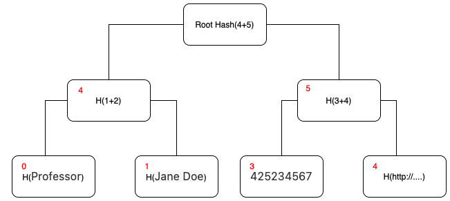

JSON-LD document merklization
Motivation
Implement a data structure that allows generating zero-knowledge proofs based on individual entries of JSON-LD documents. This will enable users to prove certain statements about their data without revealing the actual content, thereby preserving privacy and ensuring data security..
Core Concept
Convert a JSON-LD document into a Merkle Tree data structure (namely, merklize it), and prove the inclusion of the entries in the tree.
To achieve this, take the JSON-LD document and convert it to an expanded form. Then, normalize it using the URDNA2015 algorithm, which results in a list of RDF Quads. For each Quad, construct key-value pairs and add them to the Merkle Tree.
map[path]value
Example
map[https://www.w3.org/2018/credentials#expirationDate] = 1890994792000000000
For example
{ "@context": "http://schema.org/", "@type": "Person", "name": "Jane Doe", "jobTitle": "Professor", "telephone": "(425) 123-4567",}
Can be presented as
| Path | Value |
|---|---|
| http://schema.org/jobTitle | Professor |
| http://schema.org/name | Jane Doe |
| http://schema.org/telephone | (425) 123-4567 |
| http://www.w3.org/1999/02/22-rdf-syntax-ns#type | http://schema.org/Person |
The data included in the map can be stored in a Sparse Merkle tree where:
- the
indexof an entry in the tree is its path - the
valueof an entry in the tree is the hash of its value

Merklization Algorithm
Before splitting a JSON-LD document into tree entries, it must be converted into an expanded format and normalized using the URDNA2015 algorithm. Normalization is required to ensure a predictable order of array elements when multiple child elements exist under the same parent with the same predicate. Most JSON-LD documents use a compact format that employs shorthand terms to represent commonly used IRIs (Internationalized Resource Identifiers). In contrast, the expanded format uses full IRIs.
This process dereferences all terms into fully-qualified IRI values, making it easier to work with the data in a standardized and predictable manner.
Example:
JSON-LD document compact format:
{
"@context": [
"http://schema.org/",
"https://w3id.org/citizenship/v1",
"https://www.w3.org/2018/credentials/v1"],
"@type": "Person",
"name": "Jane Doe",
"jobTitle": "Professor",
"credentialSubject": {
"@type": "PermanentResident",
"birthCountry": "Spain" }
}
Expanded format:
[
{
"@type": [
"http://schema.org/Person"
],
"http://schema.org/credentialSubject": [
{
"@type": [
"https://w3id.org/citizenship#PermanentResident"
],
"https://w3id.org/citizenship#birthCountry": [
{
"@value": "Spain"
}
]
}
],
"http://schema.org/jobTitle": [
{
"@value": "Professor"
}
],
"http://schema.org/name": [
{
"@value": "Jane Doe"
}
]
}
]
Starting from the expanded format, it is possible to build path-value entries for each entry of the JSON-LD Document to be stored inside the Merkle Tree.
If there is an array of objects, we use integers as an index in the path. For example, if we have an array of PermanentResident objects in credentialSubject field, then the path will look like ["http://schema.org/credentialSubject", 0, “https://w3id.org/citizenship#birthCountry”]
To store an entry of the JSON-LD Document into a Merkle tree, we need to calculate hashes (of integer type) for the path and the value. The hashing interface has to have three methods:
- Method #1: Return the Int value of hash from an array of other Ints
// PSEUDOCODE
function hashInts (arr : int[]) :int
- Method #2: Return the Int value of hash from an arbitrary array of bytes. Poseidon uses sponge hashing. Split input byte array in 31-byte blocks. And hash in chunks of 16 blocks (the first element of the next 16-block chink is a hash of the previous chunk)
// PSEUDOCODE
function hashBytes (arr : bytes[]) :int
- Method #3: Return the Prime of the field used. For Poseidon hashing, it equals
21888242871839275222246405745257275088548364400416034343698204186575808495617
// PSEUDOCODE
function prime () :int
To calculate the hash of the path, we replace all string elements of the path with hashes of those strings using method #2. All strings are interpreted as bytes array of UTF-8 representation of the string. Int index values are left as is in the path. In the end, we hash an array of Integers using method #1.
// PSEUDOCODE
function hashPath (path : (string | int)[]) :int {
for (let i = 0; i < path.length; i++) {
if (typeof path[i] == string {
let utf8Bytes = encode(path[i]);
path[i] = hashBytes(utf8Bytes)
}
}
return hashInts(path)
}
To calculate the hash of the value, use different methods depending on the value type.
- For positive integers, we use the value as is.
- The negative integer
Nis represented asprime() - abs(N) - For boolean values, hash equals 0 for false and 1 for true.
- For string values we use method #2 to hash byte array of UTF-8 representation of string
- For DateTime the hash value is a Unix timestamp in nano-seconds.
// PSEUDOCODE
function hashValue (value : (int | bool | string | DateTime) :int {
if (typeof value == bool) {
value ? return hashInts([1]) : return hashInts([0])
}
if (typeof value == int) {
if (value < 0) {
value = prime() - abs(value)
}
return hashInts([value])
}
if (typeof value == string) {
const utf8Bytes = encode(value);
return hashBytes(utf8Bytes)
}
if(typeof value == DateTime) {
return value.UnixTimestampNano()
}
}
Given hash values for Path and Value, both in integer format, we put them into the Sparse Merkle Tree.
Normalization example
There are two cases we need to handle carefully during the normalization of the JSON-LD document
- Multigraph document
- Swapping array elements
In the following document, the type of verifiableCredential is declared as "@container": "@graph" in the schema. In this case, we need to link those graphs correctly while building path keys.
Also, during normalization, the object with the identifier [http://example.com/vc3](http://example.com/vc3) goes before the object with the identifier http://example.com/vc1. So it gets index 0, and vc1 gets index 1. This is because during canonization, the name of the graph with id http://example.com/vc3 is :c14n1 and the name of the graph with id http://example.com/vc1 is :c14n2. When building indexing, embedded graphs are sorted in lexical order, so http://example.com/vc3 comes before http://example.com/vc1.
Example document:
{
"@context":[
"https://www.w3.org/2018/credentials/v1",
"https://raw.githubusercontent.com/iden3/claim-schema-vocab/main/schemas/json-ld/kyc-v3.json-ld",
"https://raw.githubusercontent.com/iden3/claim-schema-vocab/main/schemas/json-ld/iden3credential-v2.json-ld"
],
"@type":"VerifiablePresentation",
"verifiableCredential":[
{
"@id": "http://example.com/vc1",
"@type":"KYCAgeCredential",
"birthday":19960424
},
{
"@id": "http://example.com/vc3",
"@type": "Iden3SparseMerkleTreeProof",
"issuerData": {
"state": {
"blockTimestamp": 123
}
}
}
]
}
After normalization nodes under verifiableCredential will be swapped, and the path to blockTimestamp would look like
[
"https://www.w3.org/2018/credentials#verifiableCredential",
0,
"https://github.com/iden3/claim-schema-vocab/blob/main/proofs/Iden3SparseMerkleTreeProof-v2.md#issuerData",
"https://github.com/iden3/claim-schema-vocab/blob/main/proofs/Iden3SparseMerkleTreeProof-v2.md#state",
"https://github.com/iden3/claim-schema-vocab/blob/main/proofs/Iden3SparseMerkleTreeProof-v2.md#blockTimestamp"
]
And the path to birthday is
[
"https://www.w3.org/2018/credentials#verifiableCredential",
1,
"https://github.com/iden3/claim-schema-vocab/blob/main/credentials/kyc.md#birthday"
]
Proof of Inclusion and Non-Inclusion
Each entry of the JSON-LD document can now be added inside the Sparse Merkle Tree. For example, the entry (birthCountry->Spain) can be express as
map["http://schema.org/credentialSubject", "https://w3id.org/citizenship#birthCountry"] = "Spain"
After having performed the hashing to path and value as described in the algorithm section and adding it to the Sparse Merkle Tree, it is possible to generate proof of inclusion of the element inside the tree. The implementation of that will be described in the next paragraph.
Sparse Merkle Tree also allows to generate proof of non-inclusion of entries inside the JSON-LD document. For example, we can prove that an entry with a field name is not included in the document by starting from its path.
["http://schema.org/credentialSubject", “https://w3id.org/citizenship#name”]
Implementation - Merklize
The following code snippet describes how to use the go schema processor Library to merklize a JSON-LD document. Starting from the merklized version of the JSON-LD it is possible to generate proof of inclusion (or of non-inclusion) of entries starting from their path
This implementation makes use of [poseidonHash](https://www.poseidon-hash.info) as hashing algorithm inside the tree.
package main
import (
"context"
"fmt"
"strings"
"github.com/iden3/go-schema-processor/merklize"
)
func main() {
// Start from a standard JSON-LD Document
const doc = `{
"@context": [
"http://schema.org/",
"https://w3id.org/citizenship/v1",
"https://www.w3.org/2018/credentials/v1"
],
"@type": "Person",
"name": "Jane Doe",
"jobTitle": "Professor",
"credentialSubject": {
"@type": "PermanentResident",
"birthCountry": "Spain"
}
}`
// Merklize the JSON-LD Document
mz, err := merklize.MerklizeJSONLD(context.Background(), strings.NewReader(doc))
if err != nil {
panic(err)
}
// Print the root of the newly generated Sparse Merkle Tree
fmt.Println("Root:", mz.Root().Hex())
// Now let's generate a proof of inclusion for a specific path
// Parse the path
path, err := merklize.NewPath("http://schema.org/credentialSubject", "https://w3id.org/citizenship#birthCountry")
if err != nil {
panic(err)
}
// Generate the proof of inclusion for an entry corresponding to that path
proof, value, err := mz.Proof(context.Background(), path)
if err != nil {
panic(err)
}
// Print the proof
fmt.Println("Proof:", proof)
fmt.Println("Existence:", proof.Existence)
fmt.Println("Siblings:", proof.AllSiblings())
fmt.Println("Aux:", proof.NodeAux)
// Print the value inside the SMT associated with that path
fmt.Println("Value:", value)
}
Implementation - ZK Prover
The following provides an example of a general-purpose zk circuit, written in circom, that proves inclusion of an element inside a Sparse Merkle Tree. This implementation can be adapted to prove inclusion of an entry inside a JSON-LD Document starting from its path.
template MTVerifier() {
signal input root;
// expiration time
signal input expirationDate; // timestamp
signal input expirationValue;
signal input expirationMtp[32];
// expiration date
// https://www.w3.org/2018/credentials#expirationDate
// https://www.w3.org/2018/credentials#expirationDate < expirationDate
component expirationInMT = SMTVerifier(32);
expirationInMT.enabled <== 1;
expirationInMT.fnc <== 0; // inclusion
expirationInMT.root <== root;
for (var i=0; i<32; i++) { expirationInMT.siblings[i] <== expirationMtp[i]; }
expirationInMT.oldKey <== 0;
expirationInMT.oldValue <== 0;
expirationInMT.isOld0 <== 0;
expirationInMT.key <== 13483382060079230067188057675928039600565406666878111320562435194759310415773;
expirationInMT.value <== expirationValue;
}
Base verifications can be extended with any combination of fields, although some verification can be required by specific circuits. For example, verification of expiration time can be required without reviling expiration time to the verifier. Verifier will know only that the expiration time is greater than the current time.
Conclusion
The proposed approach enables to generate ZK proofs based over Verifiable Credentials (VC), which are formatted into JSON-LD data format. This open ups new possibilities:
- Do selective disclosure over entries of a VC. Namely, a user can disclose a single entry inside a proof without revealing any other entry of the document
- Do query request over entries of a VC. Namely, a user can prove that an entry satisfies a certain query without revealing the value of the entry itself (and any other entry of the document)
- Prove non membership of an entry with a specific path. Namely, a user can prove that an entry with a specific path doesn’t exist inside a VC.
- Prove non membership of a entry with a specific path and value. Namely, a user can prove that an entry with a specific path and value doesn’t exist inside a VC.
- The proof can be verified inside smart contract making VC compatible with on-chain interactions.
Implementations
Implementation of the proposed approach is available in the following repositories:
- Go - https://github.com/iden3/go-schema-processor
- JS - https://github.com/iden3/js-jsonld-merklization